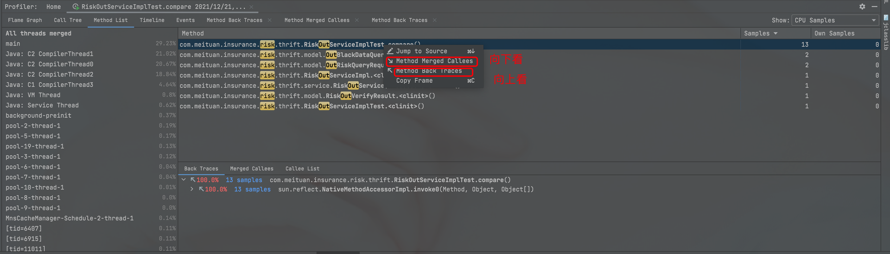

OOM 调查使用到的工具
基础工具
- top 与 htop。这两个东西比 free 好用。比较神奇的是，为什么线上还有装了 htop这样的非标准 top。字节跳动自己开源了一个 atop，可以细致地监控线程信息，也可以快速采集系统信息，是一个不错的监控工具。
- pmap。这个东西是莫枢自己也用来 dump 详细的内存轮廓的地址，但可能需要使用他提到的一个 Serviceability Agent API 来读才读得懂。这个工具的输出可以看到各段内存的起止，但不经帮助，很难读出各个子线程的栈来。
这个命令在非 root/sudo 权限下看到的是 jvm 启动参数，在 root/sudo 权限下看到的是内存轮廓，这时候就需要 Serviceability Agent API 了。 - smem。这个东西对内存的 RSS/PSS/USS 分析得很好。但并不能帮助我们直接获知我们最期待的栈内存轮廓，比如当前 JVM 的 stack 到底是怎么分布的，占了多少内存？而且更重要是，线上机器没有这个工具。
- 直接 cat /proc/pid/smaps 其实其他的进程内存查看工具的信息可能都能在这里看得到，但是需要耐心。而且，这个东西在线上也是看不了的，看来也是需要 root。
- ps_mem.py 这是一个对 private ram usage 分析得不错的脚本。但是需要 root。
- jstack。 这是目前 thread dump 最详尽的命令行工具了。但线上有时候用不了（为什么用不了呢）。jstack 可以用来分析 core dump（jmap 也可以）。
- 其他 jmx 客户端。 JConsole/JVisualVM/JMC。全部都连不上线上。JVisualVM 的 mbean 功能没有 JConsole 强大，要搞好 mbean，要在界面上对“函数名”浮层按钮进行点击调用。或者在 JMC 上打开 mbeanserver 的控制台，在诊断命令面板里面点击 GC.class_stats 等高危命令。
- 飞行记录器。这个东西甲骨文收费非常贵，但好处是可以录下来再在本地回放。目前看来，所有的 JVM 运行时状态分析，只有这个是最完备的了。它还有一个命令行工具 jcmd，可以动态地使用飞行记录器的功能和各种 jmx client 特有的动能。
- 其他，这里有本书，讲了很多 system tuning 的原理和工具，但对 JVM 的调试好像没有什么特别的好处。
- 看`jstat -gc PID 也可以看到内存轮廓。单位为 kb。其中 MU 是 Metaspace Used（元空间已使用量）。同理，JMX 客户端也可以看到这个值。jstat 相关的 options 可以查看内部的 gc 统计结果，比直接读 gc log 直观。因为 JVM 会直接写一个内部的类似日志的东西，把所有的 gc 记下来，即使没有打开 printGCLog。jstat -gcutil PID 可以看到利用率。jstat -gcutil pid 1000 100。
- directbuffer 和 metaspace 的回收严重依赖 fullgc，ygc 是远远不够的。
- 查看元空间的尺寸：
/usr/local/java8/bin/java -XX:+PrintFlagsFinal -version | grep Metaspace直接看 gc log 也可以看到 metaspace 的大小。 - 查看所有的 native memory：
jcmd 16200 VM.native_memory scale=MB，这需要使用 Java 8 自带的 nmt 功能。注意，jmc 可以直接看到 direct buffer，比 native memory tracker 优秀，但看不到 thread 内存。nmt 正好反过来，能看到线程消耗的内存，看不到 direct buffer。 - 查看启动参数的方法：
jps -lvm查看实际的 jvm 汇总传入参数。ps -auxps -elf查看进程实际的传入参数。java -XX:+PrintFlagsFinaljava 命令默认的参数。- jinfo pid
- heap dump 可能包括 full gc 的时间，也包括写磁盘的时间，大堆的 hang/panic 几乎不可避免。
- 要仔细思考互为因果的问题里各个因素的相互关系和在时间线上出现的顺序：有 GC 耗时增大、线程 Block 增多、慢查询增多、CPU 负载高四个表象，到底哪个是诱因？如何判断 GC 有没有问题？使用 CMS 有哪些常见问题？如何判断根因是什么？如何解决或避免这些问题？
- 真正难的是建立评价 Metric 的方法：当前的系统 performance 应该使用什么样的 metric 来衡量。
- 触发 gc 的方法：
jcmd <pid> GC.run- jmap -histo:live 7544
- 如何确认当前的收集器类型？
jmap -heap <pid> | grep GC。或者直接看 gc log 也可以。
基础原理汇总：
- 聊聊jvm的-XX:MaxDirectMemorySize
- https://dzone.com/articles/permgen-and-metaspace
- Native Memory Tracking in JVM
- JVM源码分析之堆外内存完全解读
- JVM Anatomy Quark #12: Native Memory Tracking
- 聊聊HotSpot VM的Native Memory Tracking
- NMT 工具输出表
- Java程序在Linux上运行虚拟内存耗用很大
- native-mem-tracking.md
- 说说在Java启动参数上我犯的错
- 江南白衣 | 关键系统的JVM参数推荐(2018仲夏版)
- 线程栈的原理
- thread 源码
- rocketmq 的 jvm 配置
- gdb：注意 backtrace 的使用。
- vmerr：注意看 jvm 退出的时候线程栈状态，cpp 栈帧从哪里调用又从哪里抛出，调用从哪里来的。
- 《System.gc()和-XX:+DisableExplicitGC启动参数，以及DirectByteBuffer的内存释放》
- 《Impact of setting -XX:+DisableExplicitGC when NIO direct buffers are used》
- JVM Crash日志分析
- Metaspace 之一：Metaspace整体介绍（永久代被替换原因、元空间特点、元空间内存查看分析方法）
jcmd 实战例子
1 | |
上面的输出里面的 committed 的意思是已经向操作系统做了 mmaped PROT_READ | PROT_WRITE ，就是正在使用的内存（最初的 committed 等于 xms）；reserved 只是向系统用 mmaped none 申请了的内存，等到 paging error 才真的申请（最初的 reserved 等于 xmx）。
我们在实战中还可以观察到，如果实际上 young/old 区的实际占用率很低，top 和 free 的 mem utilization 也会降低，可见非 commited 的内存不算真的占用。关注 utilization 比实际的 used + capacity 再求比值要有意义很多。
top 排序
press shift+m after running the top command
or you can interactively choose which column to sort on
press Shift+f to enter the interactive menu
press the up or down arrow until the %MEM choice is highlighted
press s to select %MEM choice
press enter to save your selection
press q to exit the interactive menu
Or specify the sort order on the command line
jstack sop
1 | |
如果存在死锁，输出的开头和末尾都会打出死锁相关的信息，不需要再单独找分析工具。
1 | |
Profiler 问题
本文参考：《JVM CPU Profiler技术原理及源码深度解析》
常见的 profiler 有：
- JProfiler。这是一个“The Award-Winning All-in-One Java Profiler”，可惜它是商用的。
- Uber 开源的 JVM profiler，可以搜集 CPU、Memory、IO 相关的信息。
- intellij 集成的穷人版 Profiler。
- 统一的 profiler 列表。
当代的开源 lowoverhead CPU Profiler 已经超越了 hprof 和 JFR 里的 profiler。
火焰图
作为一个二维图片，火焰图的 X 轴代表采样总量，而 Y 轴代表栈深度。每个框就代表了一个栈里的函数，其宽度代表了所占用的 CPU 总时间。因此，比较宽的框就表示该函数运行时间较慢或被调用次数较多，从而占用的 CPU 时间多。通过火焰图，RD 可以轻松观察到各个方法调用占用 CPU 的情况。
找平顶，或者说宽平面。平时人们总是容易注意“宽”，但很少注意“顶”。
热点分析树
热点分析树会统计出CPU上调用最频繁的方法，我们把这些方法称为热点，同时树形结构可查看抵达此热点的不同栈路径。和调用堆栈树不同，热点分析树是从自底向上描述调用栈，并做了更深入的继承关系分析，在性能诊断时具有更好的实践指导意义。
日志通常被调用得比较多，但日志并不能被真正称为一个性能热点。就好像字符串虽然在 heapdump 里面出现得比较多，但字符串未必就是性能热点一样。热点分析树能够用聚合的视角让我们看到被调用得最多的底层方法。通常出现得比较多的热点方法有日志调用、协议编解码、加解密、各种客户端 flushBuffer。
调用堆栈树
该功能统计了Java进程在一段时间内各个方法占用CPU的情况，通过一颗自顶向下的树式（java method1 → java method2 → … native method…）来呈现耗时信息，树中包含所有在JVM中已记录的访问队列。
通常出现得比较多的底层堆栈有：
- java.lang.Thread.run
- java.util.concurrent.ThreadPoolExecutor$Worker.run
- 各种 io 事件 handler
- 各种 runnable、future.get
Idea 的 Method Merged Callees 和 Method BackTraces

Java Agent
作为 Java instrumentation 体系的经典工具，它的存在意味着我们可以把一个伴生库 attach 到 JVM 主进程里，通过 JVMTI 机制和 JVM 进行通信，这种通信是 Debugger（JDWP）、Profiler、Monitor、Thread Analyser等工具的统一基础，在主流Java虚拟机中都有实现。
我们可以通过 CPP 编写 Java Agent，也可以通过 Java 来编写 Java Agent。通过 Java 编写的 Java Agent 是一种更友好的方式。
我们应当仔细想清楚 Java Agent 和 Advice 的侵入性和编码难易程度上的差别。因为侵入性特别低，所以业内的流行开源产品都是基于 Java Agent 来实现的。
Java 的 Java Agent 规范
- 声明一个 在jar包的MANIFEST.MF中将Premain-Class指定为一个入口类。
- 实现一个这样的方法：
1 | |
这样打包出来的jar就是一个Java Agent，可以通过-javaagent参数将jar传递给Java进程伴随启动，JVM同样会在启动阶段的合适时机执行该方法。
在该方法内部，参数Instrumentation接口提供了Retransform
Classes的能力，我们利用该接口就可以对宿主进程的Class进行修改，实现方法耗时统计、故障注入、Trace等功能。Instrumentation接口提供的能力较为单一，仅与Class字节码操作相关，但由于我们现在已经处于宿主进程环境内，就可以利用JMX直接获取宿主进程的内存、线程、锁等信息。无论是Instrument API还是JMX，它们内部仍是统一基于JVMTI来实现。
一个普通 Profiler 的架构思路
使用过JProfiler的同学应该都知道，JProfiler的CPU Profiling功能提供了两种方式选项: Sampling和Instrumentation，它们也是实现CPU Profiler的两种手段。
Sampling vs Instrumentation
这个问题的另一种问法是：你的设计是基于 AOP 拦截，还是基于定时采样 dump？
Sampling方式顾名思义，基于对StackTrace的“采样”进行实现，核心原理如下：
- 引入Profiler依赖，或直接利用Agent技术注入目标JVM进程并启动Profiler。
- 启动一个采样定时器，以固定的采样频率每隔一段时间（毫秒级）对所有线程的调用栈进行Dump。
- 汇总并统计每次调用栈的Dump结果，在一定时间内采到足够的样本后，导出统计结果，内容是每个方法被采样到的次数及方法的调用关系。 Instrumentation则是利用Instrument
API，对所有必要的Class进行字节码增强，在进入每个方法前进行埋点，方法执行结束后统计本次方法执行耗时，最终进行汇总。二者都能得到想要的结果，那么它们有什么区别呢？或者说，孰优孰劣？
Instrumentation 其实就是一种 AOP，AOP 是一种更广义的编程思想。
Instrumentation 侵入性强，对真实执行环境的影响大，但采集数据详实精确（虽然里面也有很大的时间加成）。
Sampling 的缺点是：到底什么样的采样率能够保证数据真实？我们不知道。JVM 只能进入安全点才能采样，更限制了 Sampling 的活动空间。所以有了一篇这样著名的文章《Why (Most) Sampling Java Profilers Are Fucking Terrible》。
具体到“孰优孰劣”的问题层面，这两种实现技术并没有非常明显的高下之判，只有在分场景讨论下才有意义。Sampling由于低开销的特性，更适合用在CPU密集型的应用中，以及不可接受大量性能开销的线上服务中。而Instrumentation则更适合用在I/O密集的应用中、对性能开销不敏感以及确实需要精确统计的场景中。社区的Profiler更多的是基于Sampling来实现，本文也是基于Sampling来进行讲解。
注意，Sampling 也有它的用武之地，特别是对线上服务的 Sampling 而言，更是不知不觉地使用了很多的 Sampling 功能。
基于Java Agent + JMX实现
一个最简单的Sampling CPU Profiler可以用Java Agent + JMX方式来实现。以Java
Agent为入口，进入目标JVM进程后开启一个ScheduledExecutorService，定时利用JMX的threadMXBean.dumpAllThreads()来导出所有线程的StackTrace，最终汇总并导出即可。Uber的JVM-Profiler实现原理也是如此，关键部分代码如下：
1 | |
Uber提供的定时器默认Interval是100ms，对于CPU Profiler来说，这略显粗糙。但由于dumpAllThreads()的执行开销不容小觑，Interval不宜设置的过小，所以该方法的CPU
Profiling结果会存在不小的误差。JVM-Profiler的优点在于支持多种指标的Profiling（StackTrace、CPUBusy、Memory、I/O、Method），且支持将Profiling结果通过Kafka上报回中心Server进行分析，也即支持集群诊断。
所以对于 Monitoring 服务而言，大停顿的操作都要小心、小心再小心。
使用Java实现Profiler相对较简单，但也存在一些问题，譬如说Java
Agent代码与业务代码共享AppClassLoader，被JVM直接加载的agent.jar如果引入了第三方依赖，可能会对业务Class造成污染。截止发稿时，JVM-Profiler都存在这个问题，它引入了Kafka-Client、http-Client、Jackson等组件，如果与业务代码中的组件版本发生冲突，可能会引发未知错误。Greys/Arthas/JVM-Sandbox的解决方式是分离入口与核心代码，使用定制的ClassLoader加载核心代码，避免影响业务代码。
所以自定义的 Java Agent 本身并不足够好用，必须要认真思考依赖隔离的问题。
SafePoint Bias问题
基于Sampling的CPU Profiler通过采集程序在不同时间点的调用栈样本来近似地推算出热点方法，因此，从理论上来讲Sampling
CPU Profiler必须遵循以下两个原则：
- 样本必须足够多。
- 程序中所有正在运行的代码点都必须以相同的概率被Profiler采样。 如果只能在安全点采样，就违背了第二条原则。因为我们只能采集到位于安全点时刻的调用栈快照，意味着某些代码可能永远没有机会被采样，即使它真实耗费了大量的CPU执行时间，这种现象被称为“SafePoint
Bias”。
一定会有高开销的方法会不能在 SafePoint 里读到。
上文我们提到，基于JMX与基于JVMTI的Profiler实现都存在SafePoint
Bias，但一个值得了解的细节是：单独来说，JVMTI的GetStackTrace()函数并不需要在Caller的安全点执行，但当调用GetStackTrace()获取其他线程的调用栈时，必须等待，直到目标线程进入安全点；而且，GetStackTrace()仅能通过单独的线程同步定时调用，不能在UNIX信号处理器的Handler中被异步调用。综合来说，GetStackTrace()存在与JMX一样的SafePoint
Bias。更多安全点相关的知识可以参考《Safepoints: Meaning, Side Effects and Overheads》。
基于JVMTI + AsyncGetCallTrace实现
如上节所述，假如我们拥有一个函数可以获取当前线程的调用栈且不受安全点干扰，另外它还支持在UNIX信号处理器中被异步调用，那么我们只需注册一个UNIX信号处理器，在Handler中调用该函数获取当前线程的调用栈即可。由于UNIX信号会被发送给进程的随机一线程进行处理，因此最终信号会均匀分布在所有线程上，也就均匀获取了所有线程的调用栈样本。
按如上步骤即可实现基于AsyncGetCallTrace的CPU Profiler，这是社区中目前性能开销最低、相对效率最高的CPU
Profiler实现方式，在Linux环境下结合perf_events还能做到同时采样Java栈与Native栈，也就能同时分析Native代码中存在的性能热点。该方式的典型开源实现有Async-Profiler和Honest-Profiler，Async-Profiler实现质量较高，感兴趣的话建议大家阅读参考文章。有趣的是，IntelliJ
IDEA内置的Java
Profiler，其实就是Async-Profiler的包装。更多关于AsyncGetCallTrace的内容，大家可以参考《The
Pros and Cons of AsyncGetCallTrace Profilers》。
我们常说的“低开销 profiler”，其实指的是Async-Profiler。
如何实现 Dynamic Attach？
JDK在1.6以后提供了Attach
API，允许向运行中的JVM进程添加Agent，这项手段被广泛使用在各种Profiler和字节码增强工具中。
总的来说，Dynamic
Attach是HotSpot提供的一种特殊能力，它允许一个进程向另一个运行中的JVM进程发送一些命令并执行，命令并不限于加载Agent，还包括Dump内存、Dump线程等等。
arthas 的例子：
1 | |
async profiler 的 jattach 的例子：
1 | |
如何实现自己的火焰图？
现在我们拥有了采样调用栈的能力，但是调用栈样本集是以二维数组的数据结构形式存在于内存中的，如何将其转换为可视化的火焰图呢？
火焰图通常是一个svg文件，部分优秀项目可以根据文本文件自动生成火焰图文件，仅对文本文件的格式有一定要求。FlameGraph项目的核心只是一个Perl脚本，可以根据我们提供的调用栈文本生成相应的火焰图svg文件。调用栈的文本格式相当简单，如下所示：
1 | |
将我们采样到的调用栈样本集进行整合后，需输出如上所示的文本格式。每一行代表一“类“调用栈，空格左边是调用栈的方法名排列，以分号分割，左栈底右栈顶，空格右边是该样本出现的次数。
将样本文件交给flamegraph.pl脚本执行，就能输出相应的火焰图了：
1 | |
总结
- Java Agent 很美好，但保证它的 dynamic attach 被良好实现、易用， 是基于它构建的工具能被广泛使用要思考的关键问题。
- Intercept 很美好，但不适合做定量分析，因为它对性能影响可能非常大。
- 很多 JMX api 会 block until SafePoint（比如 GetStackTrace），所以 SafePoint Bias 是客观存在、必须注意的问题。
- Sampling 才是对业务友好的采集器，精确度是一个必须迂回解决的问题。
Remote debugger
为什么有时候 remote debugger connection refuse？因为上一个 debugging 还在继续，再 debug 上去会被拒绝。
gperftools
gperftools 是 Google 开发的一套性能分析工具集，包含 CPU Profiler、Heap Profiler 等组件。在 JVM native memory leak 排查场景中，主要使用其 tcmalloc（Thread-Caching Malloc）内存分配器的 heap profiler 功能。
基本用法
1. 安装
在 Linux 环境下编译安装：
1 | |
2. 启用 Heap Profiler
在启动 JVM 时加载 gperftools 的 libtcmalloc_and_profiler.so：
1 | |
主要环境变量：
LD_PRELOAD: 预加载 gperftools 库HEAPPROFILE: heap profile 文件输出路径前缀HEAP_PROFILE_ALLOCATION_INTERVAL: 每分配指定字节数输出一次 profile（默认 1GB）HEAP_PROFILE_INUSE_INTERVAL: 当 inuse 内存达到指定字节数时输出 profileHEAP_PROFILE_TIME_INTERVAL: 每隔指定秒数输出一次 profile
3. 分析 Native Memory
gperftools 会生成一系列 heap profile 文件，如：
1 | |
使用 pprof 工具分析：
1 | |
4. 适用场景
gperftools 主要用于排查以下 native memory 问题：
- DirectByteBuffer 导致的 native memory 泄漏
- JNI 调用中 native code 的内存泄漏
- 第三方 native 库（如 Netty 的 native transport）的内存问题
- NIO 相关的堆外内存泄漏
5. 注意事项
- gperftools 只能追踪通过 malloc/free 分配的内存，无法追踪 JVM 内部直接通过 mmap 分配的内存
- 需要重新编译或使用 LD_PRELOAD 方式加载，对生产环境有一定侵入性
- 在高并发场景下会有一定性能开销（约 5%-10%）
- 与 JVM 的 Native Memory Tracking（NMT）结合使用效果更佳
java 7 的默认 flag
1 | |
btrace
BTrace 是一个安全的、动态的 Java 追踪工具，可以在不重启目标 JVM 的情况下，动态插入追踪代码来观察运行时的系统行为。
基本原理
BTrace 基于 Java Agent 和 JVMTI 技术，通过字节码增强（Bytecode Instrumentation）在运行时修改目标类的字节码。与传统的调试工具相比，BTrace 具有以下特点：
- 安全性: 限制了可用的 Java API，禁止创建对象、抛出异常、循环等可能导致目标 JVM 不稳定操作
- 低侵入性: 追踪代码在目标 JVM 中执行，但不会影响业务逻辑的正常运行
- 动态性: 可以在运行时动态加载和卸载追踪脚本
安装与使用
1. 下载安装
1 | |
2. 基本命令
1 | |
常用脚本示例
示例 1: 追踪方法执行时间
1 | |
示例 2: 追踪方法参数和返回值
1 | |
示例 3: 追踪方法调用次数
1 | |
示例 4: 追踪异常
1 | |
示例 5: 追踪内存分配
1 | |
注意事项
- BTrace 脚本中只能使用 BTraceUtils 提供的静态方法，不能使用标准 Java API
- 禁止在脚本中创建新对象、修改字段值、抛出异常
- 避免在频繁调用的方法上使用 BTrace，以免影响性能
- BTrace 2.x 版本支持更多的 Java 特性，建议使用最新版本
- 在生产环境使用前，务必在测试环境充分验证
JVisual VM
高版本的 JVisual VM 最好直接到官方主页下载。因为从 Java 9 以后，它已经不随着 jdk 分发。 在现代，命令行里 jvisualvm 等同于 visualvm。
JMC
一般 JDK 9 也不带了。可以去官方主页下载。
但注意，8.0 才支持 Java 8，8.1 以上都需要 Java 11 了。
JDK Flight Recorder (JFR)
JDK Flight Recorder 是 JMC 的核心组件，用于低开销地收集 JVM 和应用程序的详细诊断数据。
JFR 在 JDK 11+ 中的变化
在 JDK 11 之前，JFR 是 Oracle JDK 的商业特性，需要商业许可证才能在生产环境使用。从 JDK 11 开始，Oracle 将 JFR 开源并集成到 OpenJDK 中，使其在所有 JDK 发行版中免费可用。
JFR 的主要功能
- 低开销: 在生产环境中的性能开销通常小于 1%
- 事件驱动: 基于事件的记录机制，可配置记录哪些事件
- 持续录制: 支持长时间持续录制，适合生产环境监控
- 详细诊断: 记录 JVM 内部事件（GC、类加载、编译、线程等）和自定义事件
使用方式
1. 启动时启用 JFR
1 | |
常用参数：
duration: 录制时长filename: 输出文件路径dumponexit: JVM 退出时自动 dumpname: 录制名称maxsize: 最大文件大小maxage: 保留录制的时间
2. 运行时使用 jcmd 启动 JFR
1 | |
3. 配置 JFR 模板
JFR 提供了预设的配置模板：
default.jfc: 默认配置，平衡性能和详细信息profile.jfc: 性能分析配置，记录更多事件jfr: 自定义配置模板
使用自定义配置：
1 | |
JFR 事件类型
JFR 记录的事件包括：
- CPU 相关: CPU Load、Method Profiling、Native Method Sample
- 内存相关: Allocation in new TLAB、Allocation outside TLAB、Object Count
- GC 相关: GC Phase、Heap Summary、GC Configuration
- 线程相关: Thread Start、Thread End、Thread Park、Thread Sleep
- I/O 相关: File Read、File Write、Socket Read、Socket Write
- JVM 内部: Class Loading、Compilation、Code Sweeping
在 JMC 中分析 JFR
- 打开 JMC
- 连接到目标 JVM 或打开 JFR 文件
- 浏览不同的事件类型
- 使用 Flame Graph 查看方法调用热点
- 分析内存分配和 GC 行为
- 查看线程状态和锁争用
也可以这样安装（更多参考敖小剑的博客）：
1 | |
一般下载下下来的 zmc 或者 jmc 可能启动不了。
有可能是这个包的问题，也可能需要命令行启动（目前还不知道命令行双击启动到底差在哪）：alias zmc=" /Users/magicliang/.sdkman/candidates/jmc/8.0.1.33-zulu/Zulu\ Mission\ Control.app/Contents/MacOS/zmc" zmc。如果要指定 jvm，可以参考《Install and Run Azul Mission Control》和《JDK Mission Control 8 Installation Instructions》。
在命令行里，还可以用 open 启动：
1 | |
arthas
1 | |
选进程以后：
1 | |